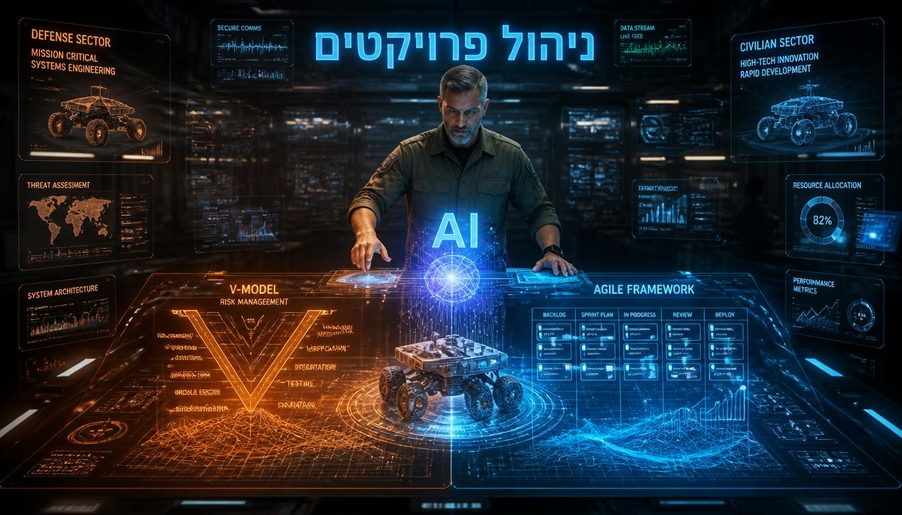

שילוב העוצמה של V-Model קפדני עם גמישות Agile, מועצם על ידי בינה מלאכותית מתקדמת כמכפיל כוח להנדסת מערכות.
גלה את השיטה
מעבר חכם מסביבה קשיחה לסביבה גמישה, תוך שמירה על בקרת איכות קפדנית.
תהליך טורי וקשיח (V-Model). מיקוד בהורדת סיכונים לאפס, עמידה בתקנים מחמירים ומשמעת הנדסית ללא פשרות.
ייעול סקרי תכן. ה-AI מצליב נתונים, מזהה אנומליות ומציף קונפליקטים, בעוד המהנדס מקבל את ההחלטה האסטרטגית.
פיתוח גמיש (Agile), איטרטיבי ומהיר. אופטימיזציה של זמן לשוק (Time-to-Market) וחווית משתמש דינמית.
הורידו את המצגת המלאה המפרטת את ארבעת שלבי היישום של בינה מלאכותית בהנדסת מערכות וניהול פרויקטים, משלב הדרישות ועד העברה לייצור.
צפה במצגת המלאה